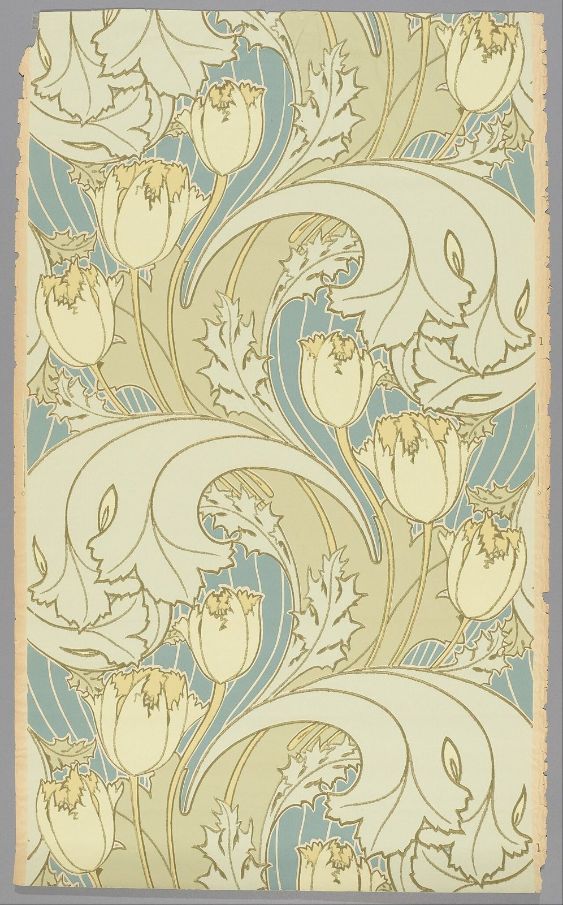

References / Other / 378
Voysey Tulip wallpaper
A pale Voysey wallpaper in which tulips rise between huge curling leaves, much closer to Art Nouveau curves than to Morris’s static repeats.
- Source
- Wikimedia Commons: Tulip, Cooper Hewitt 1980-73-32 (Google Art Project)
- Creator
- C. F. A. Voysey
- Made
- 1893–95
- Style
- Arts and Crafts (agent-proposed, not yet reviewed by a person)
- Moods
- Airy, flowing, light
- Evidence
- Inspected the Cooper Hewitt, Smithsonian Design Museum image of sidewall 1980-73-32 through its Google Art Project copy on Commons (2180 × 3501 px; viewed at 1280 px wide). Cooper Hewitt’s own site was not opened.
- Reviewed
- Rights
- Open license, stored. License: public domain. Rights policy

Context
The Google Art Project data on Commons give the title Tulip, the date 1893–95, the medium block-printed on paper, the type sidewall, the museum number 1980-73-32, and the credit Gift of Dr. Francis J. Geck, Cooper Hewitt. Commons record.
Wikipedia says Voysey’s early work in wallpapers and fabrics was in an Arts and Crafts style and that he made an important contribution to the Modern Style, the British form of Art Nouveau. Mackmurdo introduced him to wallpaper design, and some early patterns use restrained versions of Mackmurdo’s swirling motifs. Wikipedia: C. F. A. Voysey.
Observed
- Large pale-green leaves with jagged edges curl in long S-shapes across the whole width of the paper.
- Cream tulips with yellow-tipped petals stand on thin straight stems between the leaves.
- Behind them, a blue-grey ground is striped with thin pale lines that follow the curves.
- All shapes have olive outlines and flat fills.
- The colours are pale: cream, light green, blue-grey, and a little yellow. There is no red and no dark ground.
- The pattern repeats vertically, but the large curves run diagonally and are not mirrored.
Why it belongs
This paper contradicts two claims in the prospect record: the pattern is not symmetrical, and the colours are not deep dye tones. It supports the confusion with Art Nouveau, which Voysey himself fed.
It still shares the movement’s flat drawing with firm outlines.
Borrow
Use one very large, curling leaf shape as the structure of a pattern and set small upright flowers against it.
Build a pale, quiet version of the style from cream, light green, and blue-grey.
Measured
Machine-extracted by tools/image-traits.py on . Full measurement.
- Mean chroma
- 0.15
- Palette
- #deddbe 34%
- #d8d2a5 22%
- #b7ad81 10%
- #ccc49b 9%
- #9aada1 7%
- #9a9a9a 7%
- #dec797 4%
- #a69b6e 2%

